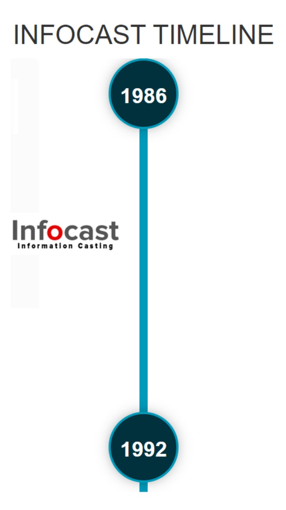
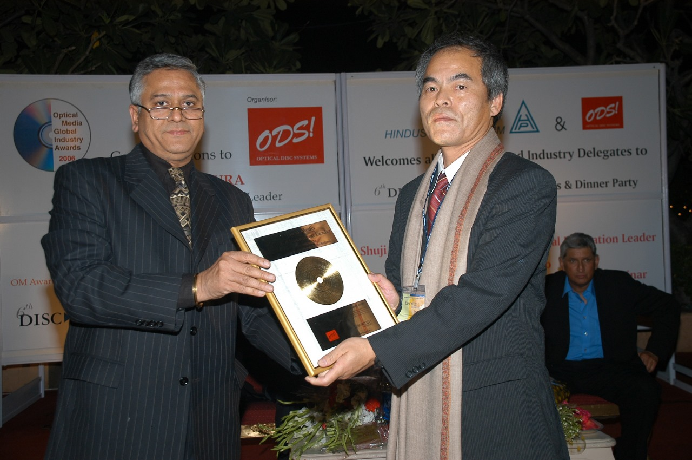
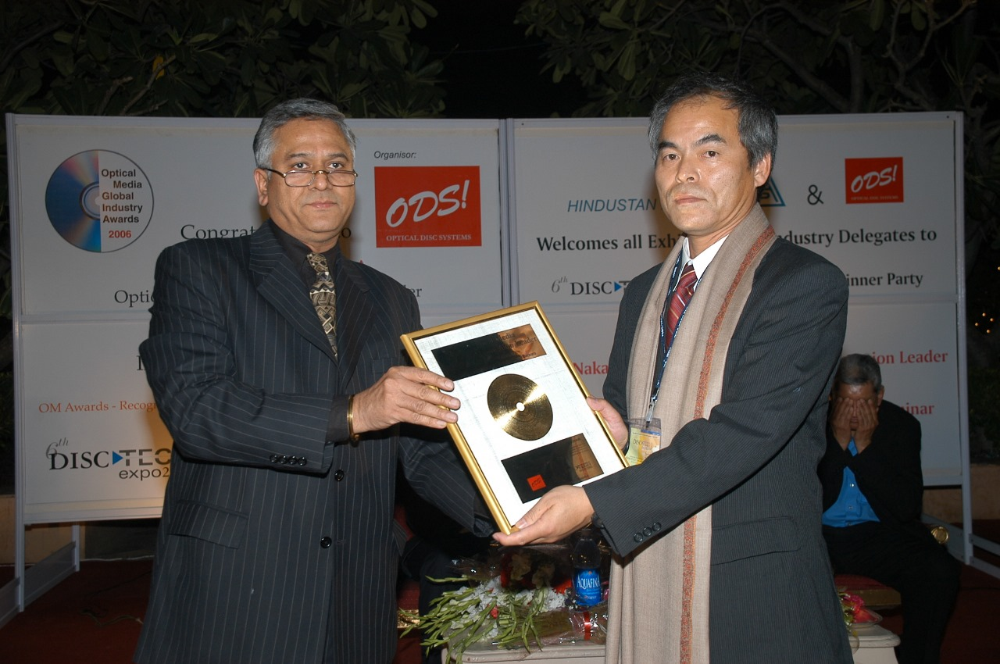

About PARA Tech Expo
PARA Tech is the acronym for Professional Automation Robotics & Artificial Intelligence Exhibition.
Infocast Systems Pvt Ltd has established a platform for industrial automation, robotics in industrial automation and artificial intelligence in creating automation solutions for manufacturing processes- namely >> PARA Tech Expo. This platform anchors in Imprint Automation India magazine. A bi- monthly magazine on Automation Technology and Industry + PARA Tech Awards + PARA Tech Conference + PARA Tech Webinars.
History
Infocast systems Pvt Ltd was incorporated in 2005 incorporating the assets of Studio Systems, a partnership firm that created the PALM Expo+ Cinema India Expo in 2001, Infocast nee Studio Systems published Playback And Fast Forward since 1986, which was then retitled titled Studio Systems in 1992
Please click the ISPL timeline ICON for full history of Infocast including its global Conferences and Awards.
Anil Chopra
Anil Chopra founder of India’s first professional pro audio magazine in 1986 that effectually developed music business in India teachin record labels professional A&R and music company management. Playback And Fast Forward editorial focused on Music Recording Studio technology and expertise guided by India’s most famous Recording engineer Daman Sood, who himself set new paradigm of recording arts and expertise at Western Outdoor Studios. Music business too expanded to hundreds of new born record labels with the advent of Compact Cassette. Playback and Fast Forward became the source for all technology for music recording and production of Compact cassettes technology of high-speed duplication.
Copyright and piracy forced the magazine to focus only on technology, which was a blessing in disguise. In 1992 Video recording and video publishing and broadcast revolution set in and Studio Systems which ushered in the compact cassette manufacturing revolution in transferring latest production information and contacts of sourcing cassettes components for mass production, once again was the primary source in ushering in the compact disc revolution in the country.
Thus in 1999 Studio Systems organised the first Optical Disc Technical Seminar series in the Taj Mahal Palace Hotel in Apollo Bundar, which led to the launch of first and only expo on optical media (CD/DVD) in 2001- 2008 Replication Asia in New Delhi at the TajMahal Palace convention centre, Dhaula Kuan.later retitled as Disc Tech Expo.
This was followed by the pro audio industry represented by sound engineers led by Daman Sood to establish a dedicated Pro Audio expo since at that point India had just the Broadcast India expo which did not satisfy the pro sound industry. Since Infocast Systems was the only publisher in India since 1986 publishing a pro audio magazine the professional fraternity felt it our responsibility to organise India’s first Pro Audio Expo.
The founder Anil Chopra created the acronym PALM – Pro Audio Live [sound] Music [production]. The first PALM was held at Nehru Centre in Mumbai along with Cinema India. The mix was electric and succeeded in establishing the expos for a nascent industry. Returning from a trip attending the Replitech expo at the Hong Kong Convention Centre the founder Anil Chopra visited the Cinema theatre expo organised concurrently at another level. On returning to India the sense of dynamism and sense of purpose in pushing new technology in audio and video Cinema India was born as a twin of PALM Expo.
Soon the stable of magazines included the gamut of technologies in audio and video recording and media.
- Studio Systems for video and broadcast
- Pro Sound Systems for pro audio and live sound
- Cinema Systems for cinema projection and multiplex technology
- Optical Disc Systems for CD, DVD, optical storage
“Information Casting was the mantra for development of Indian media industries in adopting high-tech and investing in establishing a robust economy in production of audio video content and media” stated Anil Chopra, Editor of all Infocast magazines and founder of trade expos, awards, seminars, summits, conference.
Infocast and its various media have played the role of catalyst in ushering in the revolutions in music business, music media such as compact cassette, compact disc, digital cinema, multiplex revolution, pro sound and lighting industry for stage and install, recording studios and video production. All this from 1986-2009.
In 2010 all media assets were sold to Diversified Communication India, a US trade show organiser.
Awards created by Infocast.
IRAA Awards. Recognition of Excellence in Sound Recording. Presented to sound engineers for recording music, mixing and mastering and sound design of sound track including foley and effects. Both in regional languages and mainstream languages. A jury based award programme. Which continues to this day with global acknowledgment.
Pro Sound and Light Awards. Instituted at PALM Expo to recognise outstanding achievement in pro audio and lighting industry in distribution and new product innovation and event organisation and creative production.
Optical Media Global Leadership Award. Presented first and prior to Nobel Prize and Europe Millenium Award to Shubhi Nakamura the inventor of white laser technology. Infocast magazine optical Disc Systems and Disc Tech Expo were one of the primary expo platforms for replication technology. Blue ray discs altered the global industry and ODS magazine discovered the inventor kept hidden by Nichia and Japanese manufactures of blue ray discs and players who were opposed to Shubhi Nakamura receiving any recognition or award. Anil Chopra a leader of replication industry including being a founder of Media Tech expo Frankfurt took the decision to honour Shuji Nakamura. University of San Francisco recognised the validity of the award and allowed Shuji Nakamura leave to receive the Award personally on the grounds of Taj Mahal Palace Hotel Delhi. This breakthrough award struck the entire world of technology and Nakamura San was subsequently honoured with the Nobel Prize for this invention which created White LED light revolution if the world.
Infocast has a strong history and understanding of technology awards. Infocast will now institute awards in automation industry. Fair awafs without nexus.
 